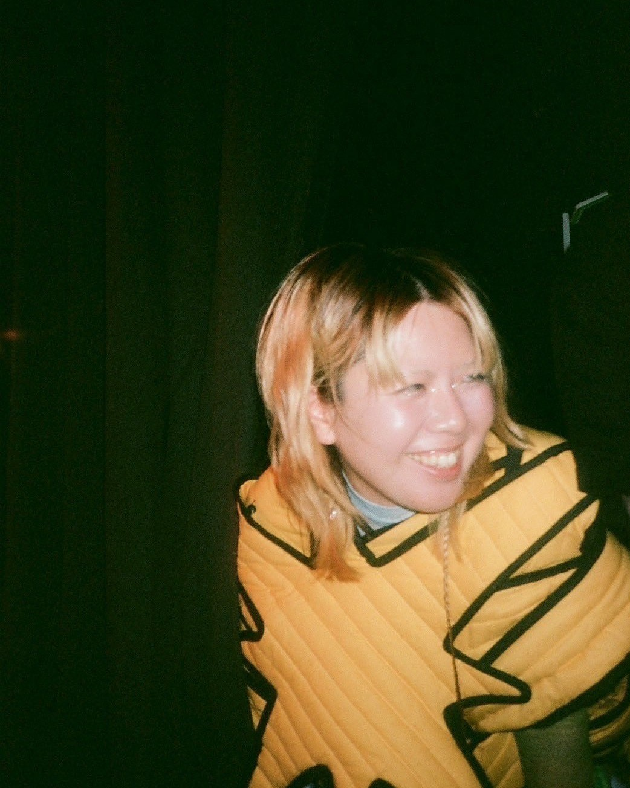

2025年
やはり、2025年は面白い年だと思う。
自分が枷だと感じていることをすると飛躍する感じする。
熱海に思い立って行ってみた。
杖をついた人も目がピカピカだった
杖をついた人も目がピカピカだった
「はるちゃん、はるちゃん」と誰かを呼んでいる。
いいきぶん
2025.05.14
手記 - となりにすわりますね
やはり、2025年は面白い年だと思う。
自分が枷だと感じていることをすると飛躍する感じする。
熱海に思い立って行ってみた。
杖をついた人も目がピカピカだった
杖をついた人も目がピカピカだった
「はるちゃん、はるちゃん」と誰かを呼んでいる。
いいきぶん
今回のタイトルは
「ひとりくない(ひとりじゃないの造語)」
と銘打って回った
"ひとり"というのは"ひとりじゃない"
言葉というのは相反する両方の意味を同時に
持っている気がしてしょうがない。
もう少し続けなければという何かと
次の何かのために、このままではいけない
という感じがしている。
人生でこんな感覚が初めてで
ちょっとフワフワする感覚がずっとする。
浮いていると言われるのは
言い得て妙だなと思う。

ミュージシャンは
そのがらん、とした空気
(物足りないとは違う)を良しとして
そのまま演奏する人
その空間に満ち満ちと演奏する人
結局どんな演奏をしても
だんだん空気に音が満ちていく
(それが遅いか、早いかなだけ)
裏の控えにいるとわかるけど
アーティストみんなずっといる。
なんなら全日いる人も多い
空間を時間で埋めているような
どれだけいても、まだ空間が空いている
その距離にみんな居心地の良さを感じている気がする。
結局何を幸せに思い
どんな事に厳しそうにしているのか
ギリギリに変えてもいいこと
最初から決めないと間に合わないこと
試行錯誤しながら、それを隠さず見せている。
アーティストには
家族のように、たま〜に触れられない神様のように
接していた。
そのバランスが本当にフェアで絶妙なフェスなんだなと思った。
美しい朝たちが
群がり、こしょばい転げ回る
すぐ怒ったりもしている
些細な事だよきっと
大事なことはね本当
ここにいるのはねきっと
救われるためだよ